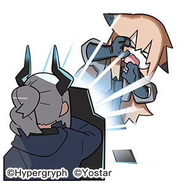

Basic Inline Styling
This paragraph has a different color
This paragraph has a black border
This paragraph has flexible a black border which will expand according to the screen size until its width reaches 500px
Margins and Padding
Padding is extra space on the inside, while margins are extra space on the outside. You can notice the effect of them by looking at the colored background
Padding
Margin
Display and Floats
- Home
- About
- Contact Us
- Blogs
You can use the CSS Float attribute to change the way something is displayed. As you can see, this text is now beside the list instead of under it
The span tag creates an inline element, which only takes as much space as it needs, unlike block elements, which take a whole block of the page. You can use the display attribute to change the default block display of something to inline.
- Home
- About
- Contact Us
- Blogs
Position - Static, Relative, Absolute, and Fixed
Static
Static positioning takes whatever the position you specified in the HTML document and puts it on the web page.
Relative
Relative positioning allows you to take an element and position it relatively to where it's supposed to be. So if a square is positioned under this text, relative positioning can change its location using its current location as a reference.
The blue square is 28 pixels higher than his main position, while the green one shows where the blue one should be.
Absolute
In absolute positioning, the element will position itself relative to the nearest positioned ancestor. Which means that the element will position itself relatively to its container, or the entire document
These squares are positioned with coordinates based on the size of the entire web page: bottom:-1550px; left:0px;, and bottom:-1550px; left:120px; respectively. This method of positioning holds no regard to the position of other things, unlike relative positioning, where the "original place" of the document is still there. Which means that these square's position can vary according to the window's size and zoom(intended position can be seen at 1980x1080 maximized window and 100% zoom)
Fixed
Fixed positioning will position the object relative to the viewpoint of the website.
The icon on the bottom right of the screen is a fixed position image
Intermediate Styling
Opacity
OPACITY
The image is on top of the text, but it is opaque, making the text readable.
Shadows and Borders
This text has an black shadow
This text has a red shadow
This text has a blurred shadow
This image has a shadow
This image has a border
You can notice that the edges are not pointy like in the original image
Fonts and Text
The following text used the font-family attribute to change font
Axolotls are also known as Mexican walking fish. Their name stems from an Aztec word meaning water dog or water monster. Axolotls have cylindrical bodies, short legs, a relatively long tail and feathery external gills. They have four toes on the front feet, five toes on the back feet and moveable eyelids.
The following text used the font-variant small-caps attribute to change its layout, using small caps letters.
Axolotls are also known as Mexican walking fish. Their name stems from an Aztec word meaning water dog or water monster. Axolotls have cylindrical bodies, short legs, a relatively long tail and feathery external gills. They have four toes on the front feet, five toes on the back feet and moveable eyelids.
HTML Style Tags
Style tags are another way of using CSS style attributes besides inline. You create two style tags and insert tag selectors, and then the attributes desired for the specific tag.
This image show the code that makes this text purple
This will give all h5 text the color purple, without having to insert the attributes each time you use an h5
Classes and IDs
ID
When styling through a .css file or a style tag, if you only want a certain object to have a certain style, you can give it an id:
id="blue-h1"
This text is blue due to an ID
Classes
A object can only have one ID, but many can share the same Class
This text has a red border due to his Class
This text shares the same class as the previous one
Flexbox
A Flexbox is a container that displays whatever's in it in a way that is flexible according to the window's dimentions. It can be used using a CSS class.
1
2
3
4
5
Animation
This is an animation of a green square becoming a blue square using @keyframes and a CSS class.